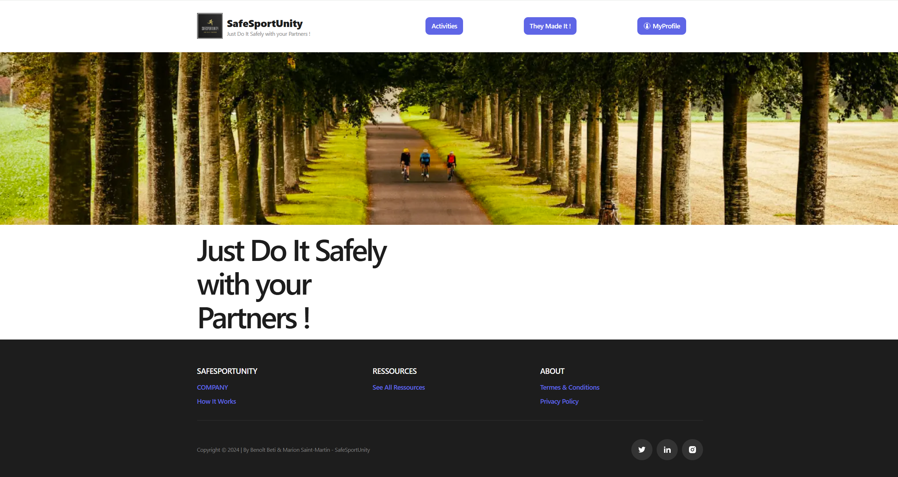
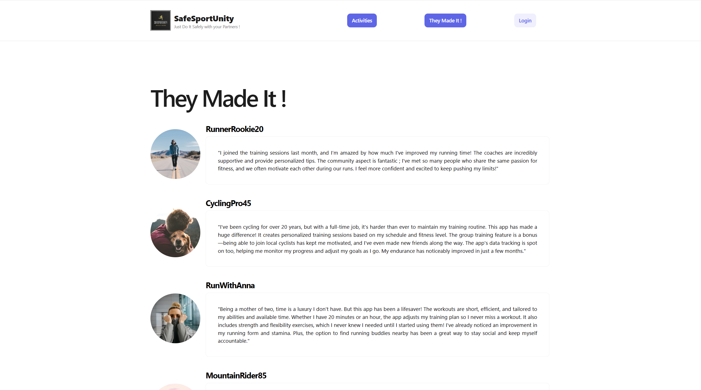
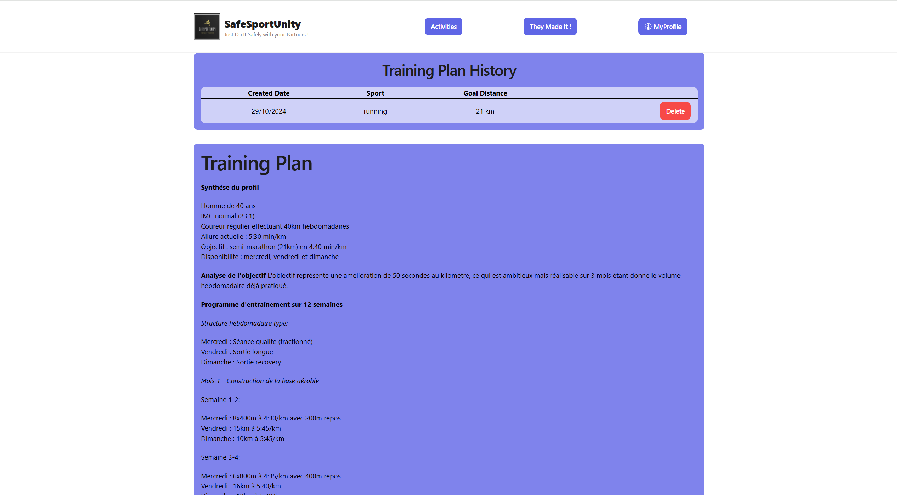
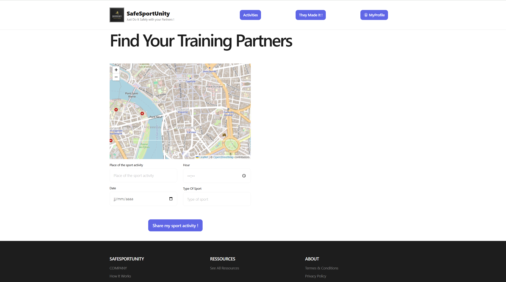
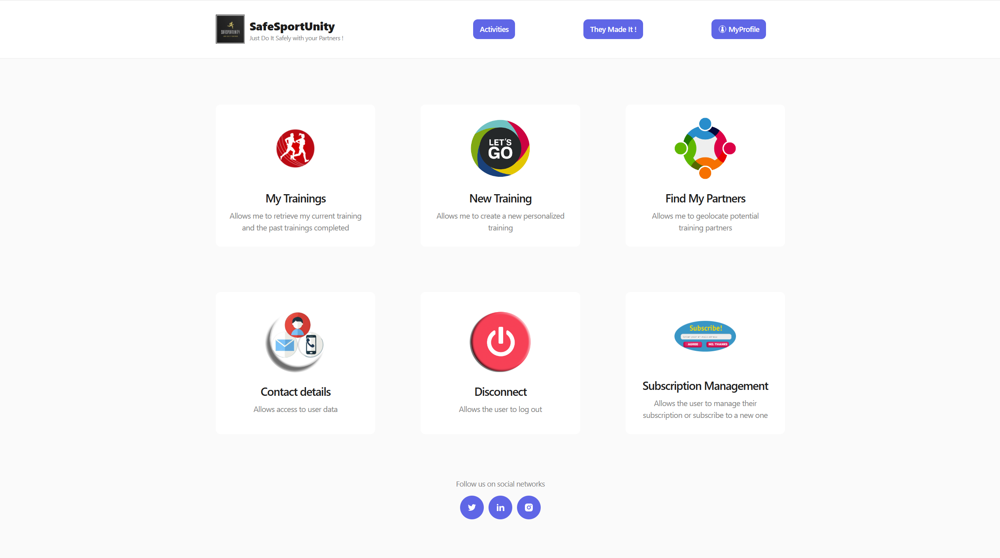

SafeSportUnity Define Your Next Training Plan and Find your Sparing Partners!.
Welcome to the landing page dedicated to our end-of-first-year programming fundamentals project.
We are Marion and Benoit, students at Holberton School in Rodez, France.
Our project is driven by our shared passion for endurance sports.
In our daily training, we often faced two challenges:
which exercises to practice to gradually reach our goals, and how to easily connect with people around us who, like us, want to train together.
Endurance sports are tough! And everyone will tell you: having a training partner changes everything!
That’s why we’ve tried to tackle this challenge using the knowledge we gained during our first Fundamentals year at Holberton!
We’re proud to present SafeSportUnity.com! Lace up your running shoes—we’re ready to take you along!




features

Alone, we may sometimes go a bit faster, but together, we’ll definitely go farther!
See you soon on the roads or trails near you!